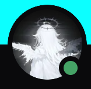

</>
Web development
Custom websites with a clear identity, responsive layouts and animations that make every interaction feel intentional.
PortfoliosLanding pagesCustom websites
Hey, I’m Haider. I develop custom Minecraft plugins and websites, and help communities run at their best.

From the first concept to the details that make it feel right.
Custom websites with a clear identity, responsive layouts and animations that make every interaction feel intentional.
Custom plugins shaped around your server. Turn a gameplay idea into an experience your community can call its own.
Staff coordination, moderation and PC checking. Clear communication, fair decisions and a positive server environment.
My experience across Minecraft servers and staff teams.
PC Checker · Forensics Team
Management Team
Moderator
Experience details supplied in my portfolio references. All past positions were resigned from.
I’m a dedicated Minecraft player, developer and community team member. I enjoy building custom plugins and websites just as much as helping a staff team work better together.
I bring quick, fair decision-making, clear communication and hands-on staff management to the communities I work with.
Haider↗Fair decisions that stay aligned with server rules.
Open communication with players and staff.
Coordinated tasks and strong staff leadership.
A website, a custom plugin, or a community that needs a hand.
Tell me what you have in mind on Discord.